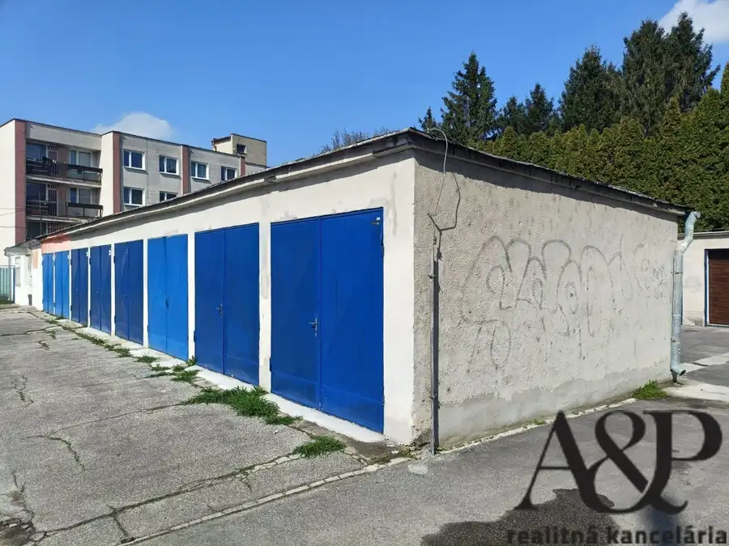
Aktuálna ponuka
12 nehnuteľností, predovšetkým rodinné domy, pozemky, byty. Každá má vlastnú stránku s fotkami, popisom a mapou.
Prezrieť ponukuMilan SuchýRealitný maklér
Realitný maklér · A&P real estate
Predaj a prenájom nehnuteľností · Myjava, Senica, Kúty
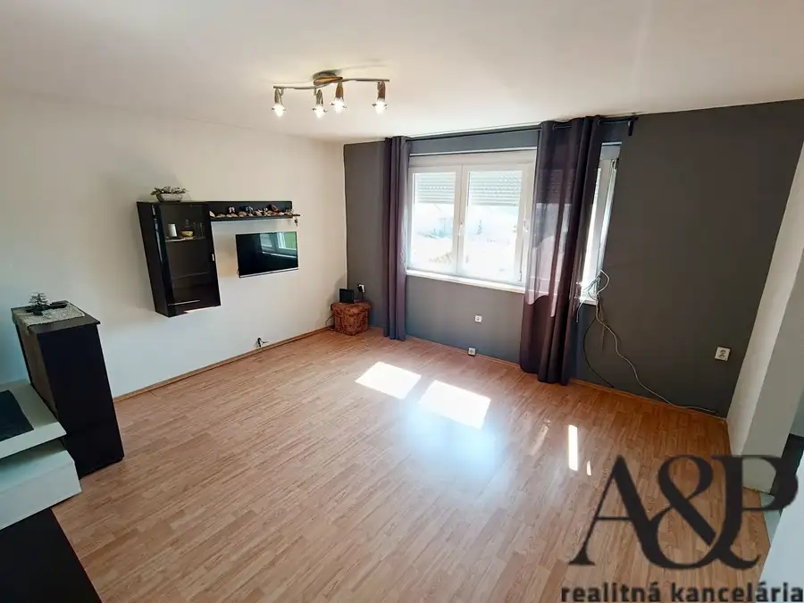
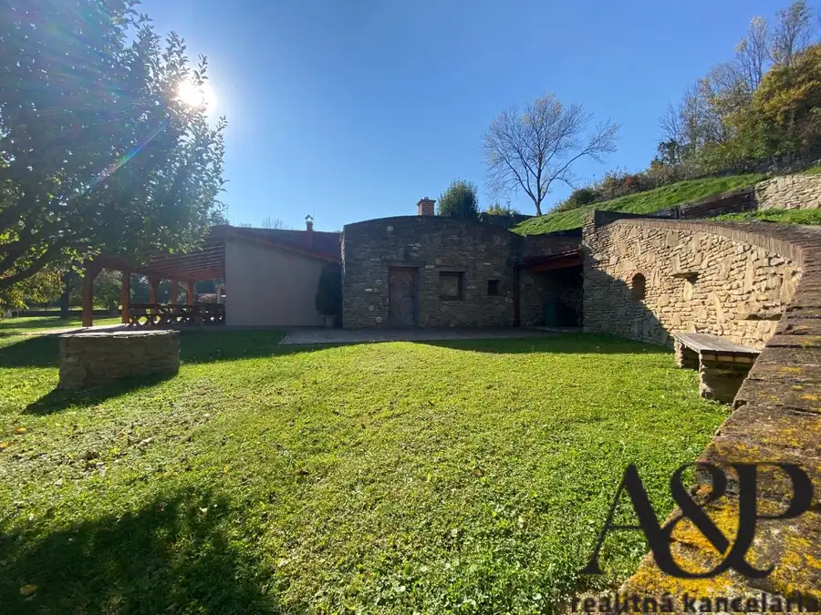
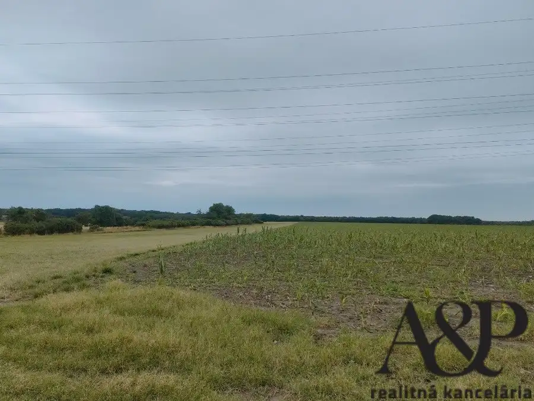
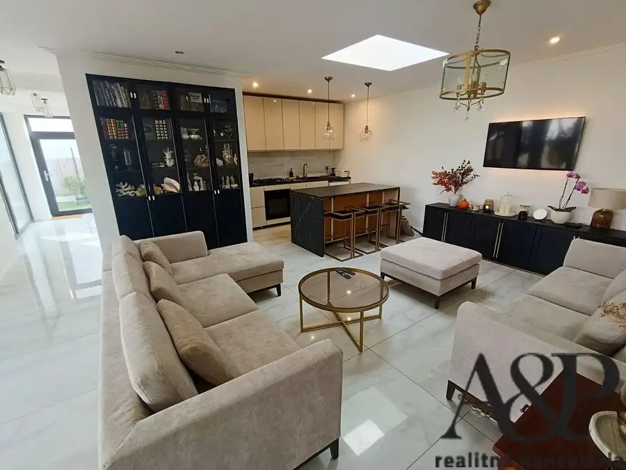
Dom10 295 000 €Znížená cena! novostavba - 4 izb. RD, pozemok 354m2, Kostolište, okr. Malacky Kostolište 92.74 m² A&P REALITNÁ KANCELÁRIA - Vo výhradnom zastúpení majiteľov Vám ponúkame na predaj novostavbu 4 - izbového rodinného domu s terasou v…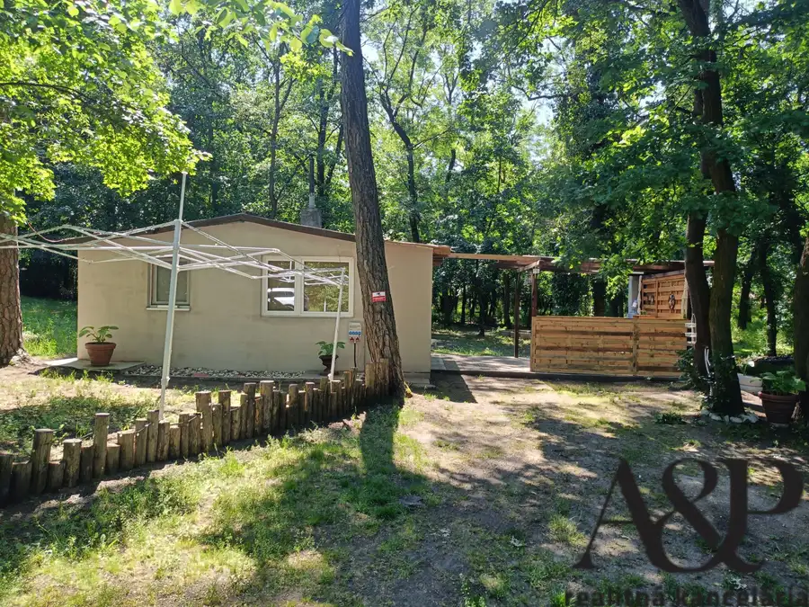
Chata, drevenica, zrub10 49 900 €Na predaj rekreačná chata, Jakubov-feld,okr. Malacky Jakubov 26 m² V zastúpení majiteľa Vám ponúkame na predaj zrekonštruovanú rekreačno-záhradnú chatu v krásnom prostredí chatárskej oblasti Jakubov - Feld. Chata sa…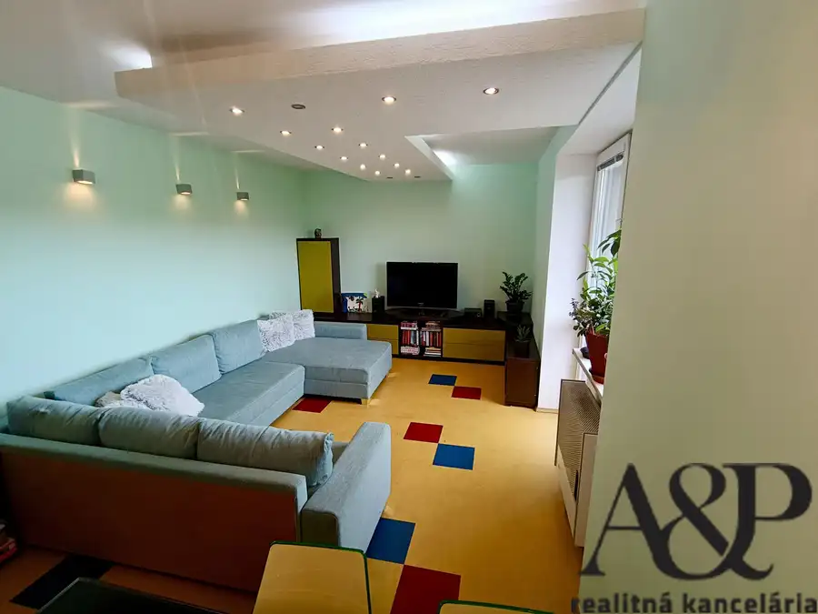
Byt10 120 500 €Znížená cena! priestranný slnečný 3 izb. byt s loggiou, 74m2, dolná štvrť, Myjava Myjava 3-izbový74 m²6. podlažie A&P realitná kancelária - Vo výhradnom zastúpení majiteľov Vám ponúkame na predaj útulný priestranný zrekonštruovaný 3 izbový byt s loggiou,…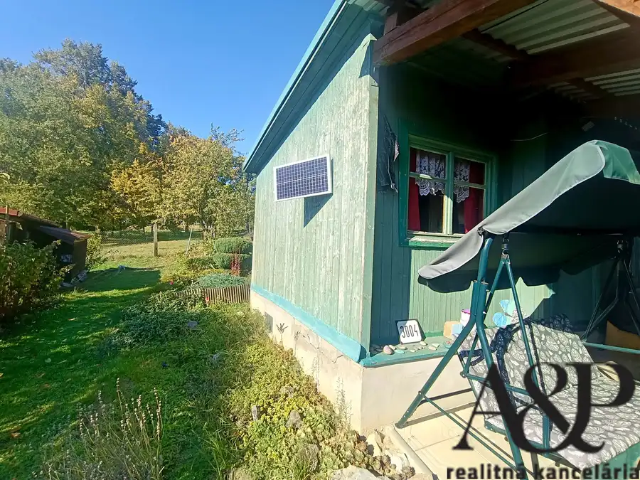
Záhradná chatka8 9 990 €Na predaj záhradná chatka, 17 m2, Myjava Myjava 17 m² A&P REALITNÁ KANCELÁRIA - Vo výhradnom zastúpení majiteľov Vám ponúkame na predaj záhradnú chatku v záhradkárskej oblasti Cengelka v…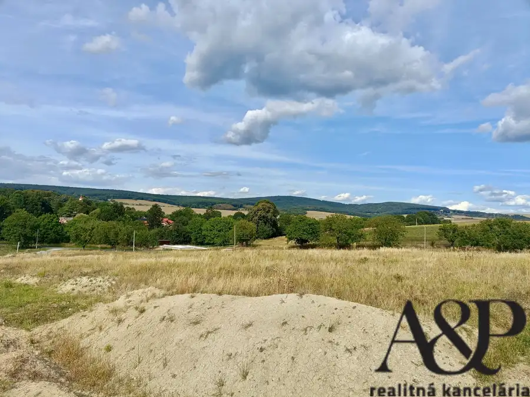
Pozemok2 34 000 €Znížená cena! pozemok pre výstavbu rodinného domu, 650 m2,Koválovec, okr. Skalica Koválovec 650 m² A&P REALITNÁ KANCELÁRIA - Vo výhradnom zastúpení majiteľa vám ponúkame na predaj stavebný pozemok v obci Koválovec, okr. Skalica. Tento pekný…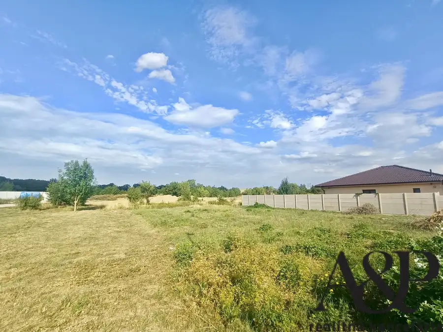
Pozemok2 112 900 €Pozemok pre výstavbu rodinného domu, 642 m2,ibv Mlyny, Senica Senica 642 m² A&P REALITNÁ KANCELÁRIA - So súhlasom majiteľov vám ponúkame na predaj jeden z posledných stavebných pozemkov vo vyhľadávanej lokalite IBV…Tomuto výberu zatiaľ nezodpovedá žiadna ponuka. Napíšte mi, čo hľadáte.
Volám sa Milan Suchý. Som realitný maklér kancelárie A&P real estate a pôsobím predovšetkým v lokalitách Myjava, Senica, Kúty a Brezová pod Bradlom (Trenčiansky kraj).

12 nehnuteľností, predovšetkým rodinné domy, pozemky, byty. Každá má vlastnú stránku s fotkami, popisom a mapou.
Prezrieť ponuku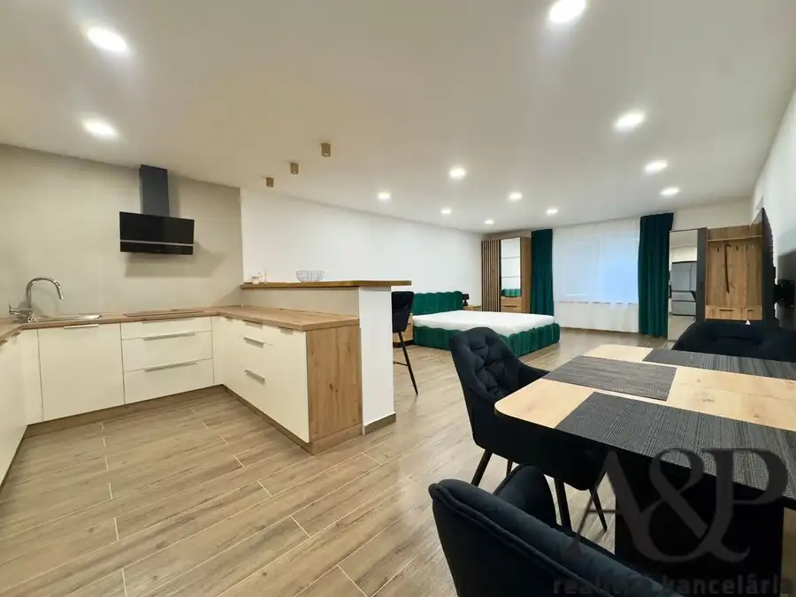
Myjava, Senica, Kúty, Brezová pod Bradlom, Závod a okolie. Ponuku si môžete prezrieť podľa lokality.
Nehnuteľnosti v lokalite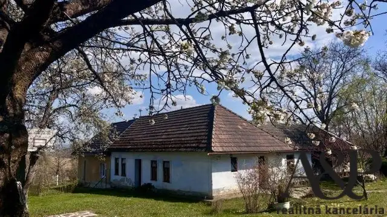
Odhad trhovej ceny, príprava prezentácie, obhliadky, zmluvy a odovzdanie nehnuteľnosti.
Dohodnúť stretnutieKaždý špendlík je jedna nehnuteľnosť z mojej ponuky. Kliknite a pozrite sa.
© prispievatelia OpenStreetMap
Na čo sa pýtate najčastejšie, skôr než sa stretneme.
Odhad trhovej ceny vychádza z aktuálnych ponúk a predajov v lokalite, nie z cenníkových tabuliek. Podmienky Vám poviem pri prvom telefonáte.
Najprv obhliadka a odhad ceny, potom príprava prezentácie (fotografie, popis, inzercia), obhliadky so záujemcami, rezervačná zmluva, kúpna zmluva, návrh na vklad do katastra a odovzdanie nehnuteľnosti. O každom kroku viete vopred.
Najrýchlejšie cez WhatsApp alebo telefón. Termín stretnutia alebo obhliadky dohodneme podľa Vás.